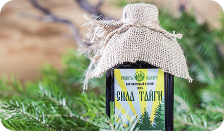

Для всех возрастов Описание

01.
Что это такое?
Пихтовый вар «Сила Тайги»– это биологически активное вещество из пихты, изготавливаемое по старинному рецепту вдалеке от городов в экологически чистом регионе (предгорье Саян в Сибири) методом экстрагирования из молодых побегов пихты сибирской, с исключительными свойствами.
02.
Как выглядит?
Внешне это вещество темно-коричневого цвета, имеющее густую однородную консистенцию и характерный неповторимый хвойный аромат.
При добавлении в кружку с горячей водой вы получаете ценный хвойный напиток, который наполняет всю комнату природным запахом тайги!

Пихтовый вар «Сила Тайги»
соответствует СанПин 2.3.2.1078-91